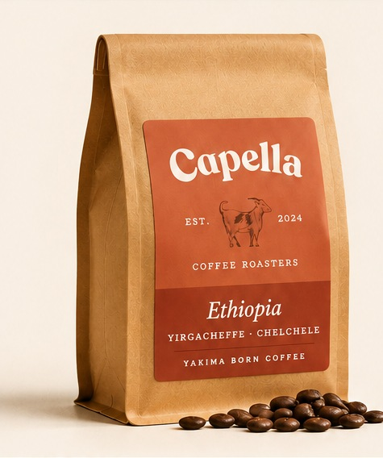
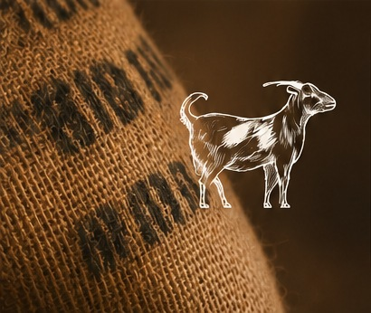

One origin
One carefully chosen single-origin coffee at a time.
One single-origin coffee at a time. When it's gone, something new takes its place.
GET THIS COFFEEOne carefully chosen single-origin coffee at a time.
Small-batch roasting every Friday and Saturday.
When one coffee is gone, another takes its place.

Yirgacheffe · Chelchele
Natural process. Supplier notes of stone fruit, blood orange, cane sugar, and black tea.
Storefront preview. Checkout and subscriptions are not active yet.
Explore the landscape behind our current single-origin coffee.

Generations ago, an Ethiopian goat herder noticed his goats dancing with joy after eating red berries from a coffee tree. That same joy is what inspired Capella.
STAY IN THE LOOP